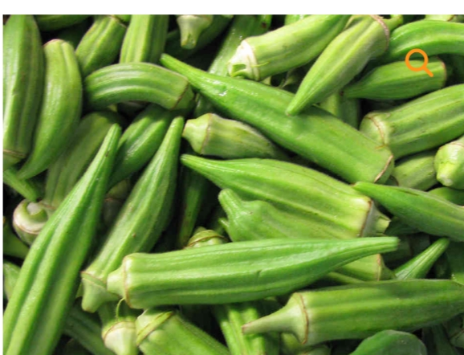
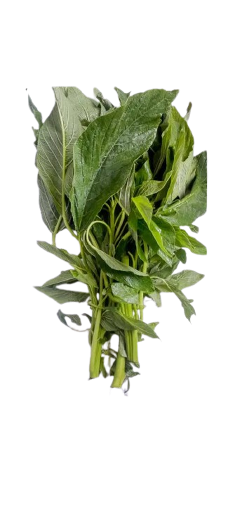
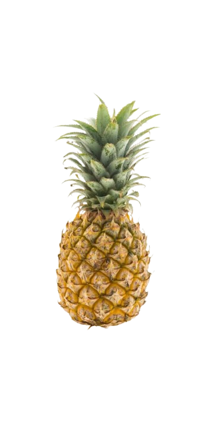

HOW TO EAT HEALTHY IN THIS NIGERIA ECONOMY.
the following are the steps to live on a healthy
diet in this economy
learn to take SEASONAL FOOD
seasonal food are foods that are available at a particular period of time
- ORANGE - ORANGE IS CHEAPER DURING AUGUST/NOVEMBER PERIOD.
It has been discovered to give strong teeth and bones due to the presence of noticeable amount of calcium and phosphorus.

- OKRO - IS A VERY CHEAP VEGETABLE IN THIS KIND OF SEASON SO LEARN TO BUY FOOD OF SEASON;
It has been discovered that it contains iron which helps in haemoglogin(red blood cell pigment that transfer O2)

- VEGETABLE(AROWOJEJA) - This is common you can plant some or buy at a cheap price
some of its health benefits is that it prevent constipation in pregnant women or still birth,
Also contain Vitamin E which prevent Reproductive failure which means It helps to stimulate weak sexual erection in men

- PINNAPPLE - This is a kind of fruits that gives vitamin C which prevent ricket in children,
It also helps to prevent tooth decay.
Also, in this kind of economy there is a recommended food you can eat i mean local delicacy
This picture here contain (rice and plaintain) plaintain is cheap and it is highly nutritional also add some eggs with it,
This will help in putting some life to your food you can also buy ponmo.
But make sure you are careful of over spending on ingredients
IN LIFE YOU HAVE TO SPEND LITTLE AND SAVE LARGE TO BE ABLE TO ACHIEVE YOUR GOAL IN LIFE.
WRITTEN BY: IREWOLEMI A.K.A I GO IN HIS MIGHT.